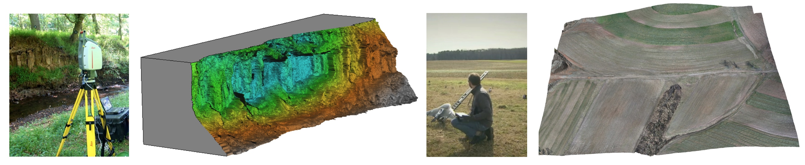

Landscape Dynamics
- Water, wind, gravitation, plants, animals and humans continuously change landscape surface
- Land surface processes are poorly understood and our predictive capabilities are limited
- Hazard management decisions are often based on insufficient information

Advances in 3D mapping
- Lidar and sUAS: increased capacity to
map 3D landscapes and assess the change on (almost) continuous basis
- Development of tools for terrain time series analysis
- Data for predictive models development, calibration and validation
to improve hazards management

Multivariate terrain time series analysis
- 1D lines - transects, horizontal migration of line features: shorelines, dune crests, channels
- 2D rasters - per cell statistics, core and envelope, rate of vertical change
- 3D rasters - space-time cube contour evolution isosurfaces

Hardin, E., Mitasova, H., Tateosian, L., Overton, M., 2014, GIS-based Analysis of Coastal Lidar Time-Series, Springer Briefs in Computer Science, Springer, New York, 84 p.
Analysis of migrating landforms
Horizontal migration is often associated with change in landform geometry
which is hard to measure with standard transects
Sand dune on NC coast: Jockey's Ridge 1974 - 2012


Transect based analysis
Jockey's Ridge dune
horizontal migration: extracting crests and manually measuring distances along transect,
to derive spatially agreggated rates

Similar famous coastal dunes: Slowinski National Park, Poland, Pyla in France, Totori in Japan
Gradient field of horizontal migration
- Measure the rate and direction of landform migration at any point in space and time
- Study spatial pattern of migration vectors
We use the concept of Space-Time Cube where for any contour z=const we can define a function
t=g(x,y)
where t is the time when this contour is located at the point (x,y).
For g(x,y) to be a function, we need to segment time series of contours into
non-intersecting segments.
Then rate of migration is inverse of the gradient magnitude of the function g(x,y).